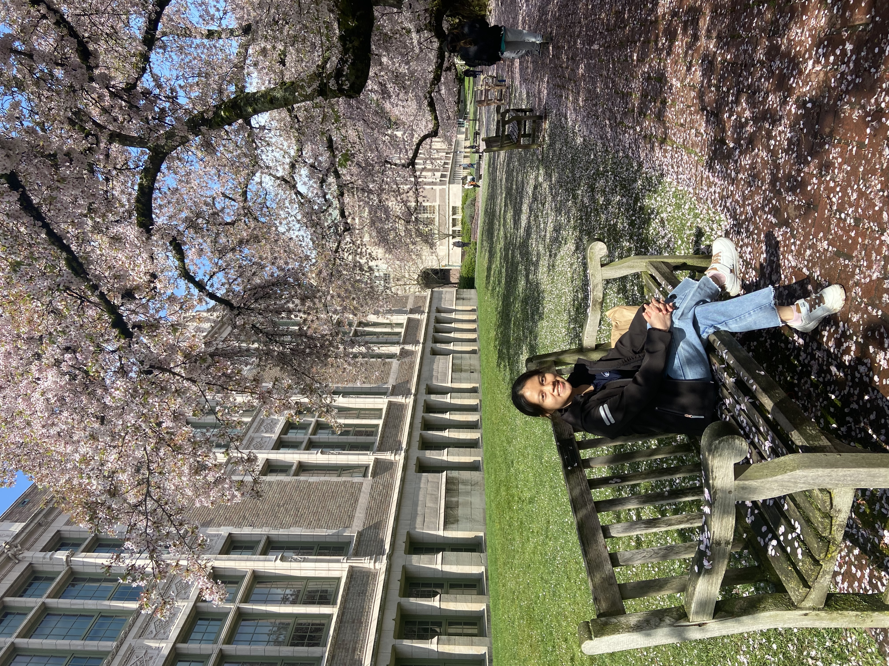
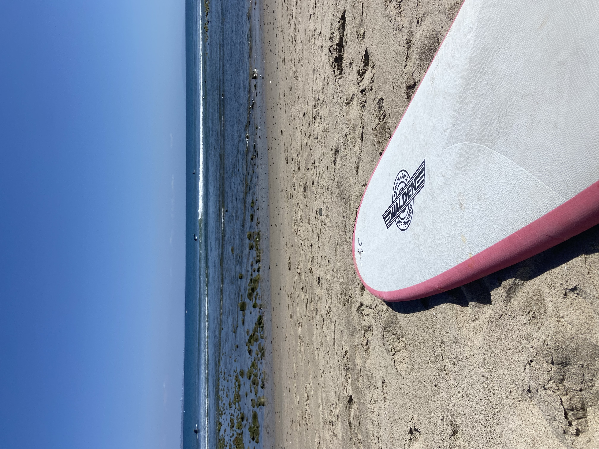
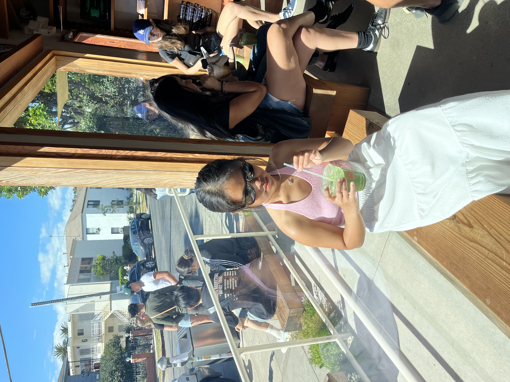
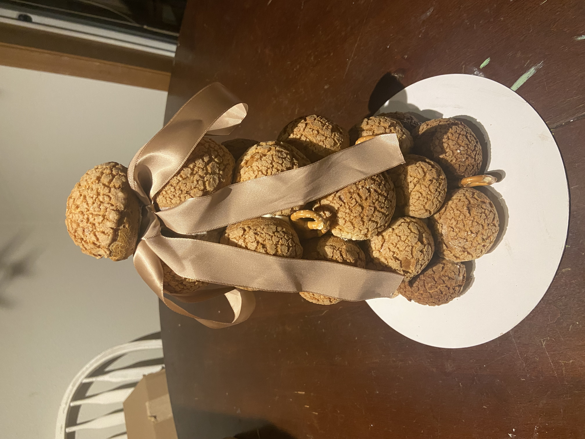

Data Scientist & AI Engineer specializing in LLMs, machine learning, and cloud infrastructure. Currently building compliance automation at Microsoft.
I'm a rising senior at the University of Washington, specializing in Data Science with minors in Statistics and Education. My work bridges technical innovation and real-world impact.
Currently, I'm building an AI-powered Regulatory Readiness Copilot for Microsoft's CISO team, using Azure OpenAI and NLP to automate compliance workflows. I'm passionate about using AI and data science to solve meaningful problems—from healthcare equity to environmental sustainability.
My technical toolkit spans the full ML lifecycle: from exploratory data analysis and feature engineering to deploying production LLM agents on cloud platforms. I thrive in the intersection of data, design, and development.

City of Tacoma • Tacoma, WA
University of Washington Information School • Seattle, WA
Paul G. Allen School of Computer Science and Engineering • Seattle, WA
CISO Governance, Risk, and Compliance Team
Building an AI-powered compliance agent using Azure OpenAI, NLP pipelines, and semantic search to automate regulatory compliance mapping and generate DevOps-ready assessments.
UW Datathon 2026
Developed HAII Index using HDBSCAN clustering to identify "forgotten populations" in healthcare, revealing 11 vulnerable groups experiencing systemic access barriers.
Sustainability AI Project
Designed autonomous LLM agent using AWS Bedrock (Claude) to automate ESG workflows, reducing manual effort by ~50% with scalable ETL pipeline and React dashboard.

Recently caught the surfing bug in San Diego. There's something about riding waves that mirrors debugging—patience, timing, and the occasional wipeout.
Exploring new places fuels my creativity. Recent highlight: a month-long solo Europe trip that taught me as much about problem-solving as any course.

Matcha over coffee, always. The ritual of preparation is meditative—much like the process of feature engineering.

Precision meets creativity in the kitchen. This cream puff tower taught me that presentation matters in data viz too.
I'm always interested in collaborating on projects that combine AI, data science, and social impact. Whether it's a research opportunity, internship, or just a conversation about ML—let's connect.